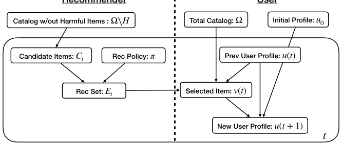

Harm Mitigation in Recommender Systems under User Preference Dynamics (用户偏好动态下的推荐系统危害缓解)
- 会议/期刊: KDD 2024
- 作者与机构: Jerry Chee、Sarah Dean（Cornell University），Shankar Kalyanaraman、Sindhu Kiranmai Ernala、Udi Weinsberg（Meta），Stratis Ioannidis（Northeastern University）
- 推荐链路定位: 召回/排序策略层（top-\(k\) 推荐策略的稳态优化，非模型结构改进）
- 研究方向: 去偏公平与可信推荐 / 用户偏好动态与长期影响
- 论文原文: 论文原文链接
- 开源代码: 开源代码仓库链接
TL;DR (1分钟核心速览)
本文指出一个被忽视的因果链：推荐系统从不展示有害内容，却可以通过“吸引用户点击”改变其兴趣漂移方向，进而影响其站外有机选择有害内容的概率。作者用 MNL 选择模型 + attraction 偏好动态刻画该闭环，证明静态偏好下 top-\(k\)对任意危害惩罚系数\(\lambda\)仍最优（即危害项形同虚设），且交替优化可任意次优；转而用隐函数定理对平稳点求梯度直接优化\(p_{\text{CLK}}-\lambda p_H\)。在 MovieLens+IMDB 半合成实验（5 个类型、100 用户）上，梯度策略在\(p_{\text{CLK}}\)与\(p_H\) 上同时优于 Alt/U0/Unif，目标值相对 Unif 最高提升 77%。
Background & Motivation (背景与核心矛盾)
- 主流范式: 工业界以 top-\(k\) 最大化 CTR；多目标推荐则把危害/健康风险作为惩罚项直接塞进打分目标（或 RL 奖励），但用户偏好被视为静态。
- 前人局限 1: 忽略推荐—偏好的放大反馈回路（amplification），无法解释“平台内全是安全内容，用户却越推越极端”的现象；静态假设下危害项在数学上会被 CTR 项吞掉。
- 前人局限 2: 即便引入偏好动态（如 Lu et al. 的 attraction 模型），其反馈为矩阵分解的实值评分、平稳点有闭式解、策略优化退化为半定松弛的二次规划；一旦换成离散选择（MNL），平稳点无闭式、目标非凸，常用交替优化失去保证。
- 核心洞察 (Key Insight): 危害是间接且路径依赖的——推荐集 \(E_t\)只影响\(p_{\text{CLK}}\)，而\(p_H=(1-p_{\text{CLK}})\cdot s_H/s_\Omega\)，即“把用户留在平台内”本身就是一种危害缓解手段；但用户画像会因消费内容而漂移，今天的点击会改变明天的\(s_H\)。
- 本文切入点: 在平稳点上定义目标，用 Banach 不动点定理保证平稳画像存在唯一且可迭代求得，再用隐函数定理把“平稳点对策略的依赖”微分掉，从而做真正的端到端策略梯度。
Method (核心方法设计)
1. 整体框架 (Overall Architecture)
每一时刻，推荐器从已过滤有害项的候选集 \(C_t\subseteq\Omega\setminus H\)中依策略\(\pi\)抽取推荐集\(E_t\)；用户依 MNL 模型二选一：CLK（点击\(E_t\)中某物品）或 ORG（拒绝推荐，从含有害项的全体\(\Omega\)中有机选择）。被消费物品\(v(t)\)通过 attraction 动态把用户画像\(u(t)\)拉向自身，形成\(u(t+1)\)。优化的不是单步收益，而是该马尔可夫式过程的平稳画像\(\bar u(\pi)\)上的\(f(\pi)=p_{\text{CLK}}(\pi,\bar u)-\lambda p_H(\pi,\bar u)\)。求解分三层：固定点迭代算\(\bar u\)→ 隐函数定理算\(\nabla_\pi\bar u\)→ 链式法则得\(\nabla_\pi f\)→ 投影梯度/SLSQP 更新\(\pi\)。
flowchart TD
A["候选集 C_t（已过滤有害项 H）"] --> B["策略 π 输出推荐集 E_t"]
B --> C{"用户 MNL 选择"}
C -->|CLK| D["点击 E_t 内物品"]
C -->|ORG| E["全库 Ω 有机选择，可能命中 H"]
D --> F["attraction 动态更新 u(t+1)"]
E --> F
F --> G["平稳画像 ū(π)：固定点迭代"]
G --> H["目标 f = pCLK − λ pH，隐函数梯度上升"]
H --> B
图 1：推荐集—用户选择—偏好漂移的闭环；推荐器永不展示有害项，危害仅经 ORG 通道发生。
2. 关键设计拆解 (Key Designs)
-
CLK/ORG 双通道 MNL 选择模型（把“不推荐”也建模成一种干预）：痛点是把危害当作物品属性，忽略了“用户可绕开推荐”。本文令 \(s_v=e^{v^\top u}\)、\(g(s_E)=s_E/(s_E+c)\)，则\(p_{\text{CLK}\mid E}=g(s_E)\)、\(p_{v\mid E,\text{ORG}}=s_v/s_\Omega\)，于是\(p_H=(1-g(s_E))\cdot s_H/s_\Omega\)。直觉：\(c\)是“拒绝推荐的吸引力”，\(c\) 越大推荐越难被接受，缓解危害越只能靠精准选品而非“多推”。
-
静态最优性反例（Thm 1）：危害惩罚在静态偏好下完全失效：若 \(g\)单调非降，则对任意\(\lambda\ge 0\)，top-\(k\)仍是\(\max_\pi p_{\text{CLK}}-\lambda p_H\)的最优解（独立采样下再加\(g\)凹即可，用子模/多重线性松弛证明）。因为\(p_H\)关于\(p_{\text{CLK}}\) 单调递减，最大化点击即最小化危害。这解释了为何“在目标里加危害项”若无动态建模则毫无作用——也给出本文的合法性：必须建模动态。
-
平稳点存在唯一性与隐函数梯度（Thm 2 + 可解性）：attraction 动态为 \(u(t+1)=\mathbb{E}[\beta u_0+\alpha_{v(t)}v(t)+(1-\alpha_{v(t)}-\beta)u(t)]\)，令漂移为零得固定点方程
当 \(\|v\|\)满足收缩条件（与\(\|u_0\|,\alpha_{NH},\beta,n,d,\alpha_H\)有关）时\(F\)关于\(u\)是\(\pi\)-一致压缩，故\(\bar u\)存在唯一且\(\bar u_{\ell+1}=F(\pi,\bar u_\ell)\)指数收敛；该条件可通过对\(v,u_0\)同步缩放无损满足。由于\(\bar u(\pi)\)无闭式，用隐函数定理对\(F(\pi,\bar u)-\bar u=0\) 求导：
再链式展开 \(\nabla_\pi f=\nabla_\pi U+[\nabla_\pi\bar u]^\top\nabla_u U\)（\(U=p_{\text{CLK}}-\lambda p_H\)）。核心价值：把“仿真到收敛”这一不可微过程变成可反向传播的可微不动点。
- 训练目标、负采样与推理开销：无负采样（非对比学习范式）；目标即式 (9) 的非凸 \(f\)，约束集\(\mathcal{P}\)是单纯形并集，投影\(O(m\log m)\)（Michelot 算法）。有界基数设定参数量\(m=\sum_C\binom{|C|}{k}\)，仅\(k\)固定时可行；独立采样设定\(m'=\sum_C|C|\)，对任意\(k\)多项式。每步梯度需一次固定点收敛（指数收敛）+ 一次\(d\times d\) 线性求解，整体多项式复杂度；实验用 SLSQP 而非朴素 PGA。
Experimental Setup & Evaluation Protocol (实验设置与评估协议)
- 数据集与预处理: MovieLens-25M 提供用户/物品画像，经 IMDB parental guide 对齐；某片在 5 类（Sex & Nudity、Violence & Gore、Profanity、Alcohol/Drugs/Smoking、Frightening Scenes）中任一为 “Severe” 即标为有害。
| 数据集（类型子集） | #Users | #Items | #Interactions | 密度 | 说明 |
|---|---|---|---|---|---|
| Action / Adventure / Comedy / Fantasy / Sci-Fi | 各 100 | 各 100（评分数最多） | 子集内全部评分（原文未逐条报告） | 未报告 | \(d=12\)的 MF 画像作\(u_0\)与\(v\)；\(c\in[1,20]\) 按类型校准 |
- 数据划分与防穿越 (Splitting Strategy): 本文不做训练/测试集切分，而是半合成策略仿真：MF 在全量评分上学出 \(u_0,v\)，作为仿真初值与物品向量；随后对每个策略独立跑\(u(t)\)动力学至\(10^{-3}\) 容差，比较平稳点指标。因此不存在传统意义上的穿越风险，但也失去了真实泛化评估。
- 排名评测协议 (Ranking Protocol): 非 Full-Ranking 亦非 Sampled Ranking，不报告 HR/NDCG/Recall。评价指标为策略级期望量：\(f\)、\(p_{\text{CLK}}\)、\(p_H\)，以及收敛残差\(\|\lim_t u(t)-\bar u\|\)；100 用户取均值±标准差，并额外给出逐用户目标差 PDF 以证明非均值掩盖。
- 对比基线与超参设置: 4 个策略——
Grad（本文，SLSQP+隐函数梯度）、Alt（交替优化，式 14）、U0（静态画像 \(u_0\)下的 top-\(k\)，即 Thm 1）、Unif（均匀随机推荐）。默认\(\alpha_H=0.25\)、\(\alpha_{NH}=0.5\)、\(\beta=0.15\)、\(\lambda=100\)、有界基数\(k=1\)；参数敏感性另测\(\lambda,\beta,c,\alpha_H/\alpha_{NH},k\)。
Key Experimental Results (实验关键数据)
1. 主实验对比 (Main Results)
| 类型 | Grad \(f\)↑ | Alt\(f\) | U0\(f\) | Unif\(f\) | Grad\(p_{\text{CLK}}\)↑ | Grad\(p_H\)↓ | Improv.% (以\(\lvert f\rvert\) 计) |
|---|---|---|---|---|---|---|---|
| Action | -4.694 | -6.268 | -6.279 | -15.681 | 0.810 | 0.055 | +70.1% |
| Adventure | -3.445 | -3.793 | -4.160 | -9.243 | 0.676 | 0.041 | +62.7% |
| Comedy | -3.816 | -4.725 | -5.556 | -11.318 | 0.717 | 0.045 | +66.3% |
| Fantasy | -2.754 | -2.760 | -3.425 | -7.957 | 0.649 | 0.034 | +65.4% |
| Sci-Fi | -2.925 | -4.772 | -4.618 | -12.485 | 0.812 | 0.037 | +76.6% |
（完整对照：Alt 的 \(p_{\text{CLK}}/p_H\)在 Action 为 0.774/0.070，U0 为 0.778/0.071，Unif 为 0.487/0.162；Grad 在所有类型上同时取得更高\(p_{\text{CLK}}\)与更低\(p_H\)。）
2. 消融实验 (Ablation Study)
本文无传统模块消融，其“消融”即策略变体，恰好对应两条定理：
| 变体 | 5 类型平均 \(f\)↑ | 平均\(p_{\text{CLK}}\)↑ | 平均\(p_H\) ↓ | 移除的要素 |
|---|---|---|---|---|
| Grad（完整） | -3.527 | 0.733 | 0.042 | — |
| Alt（交替优化） | -4.464 | 0.706 | 0.052 | 平稳点与策略的联合梯度（退化为 Thm 1 的 top-\(k\)） |
| U0（静态 top-\(k\)） | -4.808 | 0.684 | 0.055 | 偏好动态建模（Thm 1 场景） |
| Unif（均匀） | -11.337 | 0.341 | 0.117 | 个性化与全部优化 |
收敛性（表 3）：所有策略、所有类型的 \(\|\lim_t u(t)-\bar u\|\)均在\(4.7\times10^{-5}\sim7.3\times10^{-4}\)，与\(10^{-3}\) 阈值同量级，验证 Thm 2 的指数收敛在实测中成立。
3. 关键实验发现 (Key Findings)
- 不存在“效用—安全”权衡：Grad 在 Action 上比 Alt 高 3.6 个点 \(p_{\text{CLK}}\)（0.810 vs 0.774）同时低 1.5 个点\(p_H\)（0.055 vs 0.070）。原因在于稳态下被推荐的物品既“更可点”又与平均有害向量的内积更小（图 3 中 Grad 的支持集明显右偏），二者在画像空间中本就解耦，并非此消彼长。
- 交替优化的失效被实测复现：U0 与 Alt 的 \(f\)差距很小（平均 -4.808 vs -4.464），远小于二者与 Grad 的差距——说明 Alt 的第一步被 Thm 1 锁死为 top-\(k\)、轨迹与\(\lambda\) 无关，多迭代几乎不产生信息增量；而 Grad 相对 Unif 的 62.7%–76.6% 提升主要来自“动态+联合梯度”而非“多算几步”。
- 收益随“危害可分离性”单调变化：\(\lambda\)从 100 增大时 Grad 的优势扩大（危害越重要，动态建模越值钱）；\(\beta\)增大则优势缩小（固有画像权重高、策略可塑性低）；\(c\)增大优势扩大（推荐越易被拒，越需选品精准）；\(\alpha_H/\alpha_{NH}\)增大优势缩小（用户对有害内容越敏感，缓解空间越小）；\(k\)增大在固定\(c\)时全体变好、在固定\(k/c\) 时全体变差但 Grad 始终领先。Fantasy 上 Grad≈Alt（-2.754 vs -2.760）说明该类型下危害方向与点击方向近乎重合，动态建模的边际价值趋零。
Highlights & Limitations (亮点、对比与审稿批判)
- 与代表作对比 (vs. Prior Work): 相较 Lu et al. (KDD'14) 的 attraction+MF 实值反馈（平稳点闭式、SDR 解二次规划），本文将反馈换成离散 MNL 选择，平稳点变为无闭式固定点、目标非凸，技术难度实质性上升；相较 Kalimeris et al. (KDD'21) 等对 amplification 的实证批判，本文给出可执行的策略优化算法而非仅诊断；相较 Singh et al. (FAccTRec'20) 的 safe-RL，本文不依赖在线试错，用可微不动点离线求解稳态。
- 可迁移亮点: ①“可微不动点”范式可直接迁移到任何“推荐→用户状态演化→再推荐”的稳态优化（如多样性衰减、创作者生态、留存 LTV）；②独立采样策略参数化把 \(\Theta(2^k)\)降到\(\sum_C|C|\)，是大动作空间策略搜索的实用技巧；③把“拒绝推荐”显式建模为 ORG 通道，使\(p_H\) 成为可解释的乘积形式，便于业务归因。
- 审稿级局限批判: ①评估规模极小且半合成——每类型仅 100 用户×100 物品、\(d=12\)、\(k=1\)，MF 画像直接当真值，缺少真实在线 A/B 或反事实日志验证，77% 的提升幅度不宜外推；②目标非凸且需已知候选分布\(\mathcal{C}\)、\(c\)、\(\alpha_H/\alpha_{NH}\)与完美有害项标注，SLSQP 每步需解线性系统并跑固定点收敛，线上时延与参数标定成本未评估；③危害被简化为二元标签，“Severe 即有害”既忽略强度与语境，也把 ORG 选择建模为与推荐无关的静态分布\(s_\Omega\)，实际中站外内容供给本身受平台外因素驱动。
Rating (四维评分)
- 方法创新性 (Novelty): ⭐⭐⭐⭐ （把偏好动态下的危害缓解从“加惩罚项”推进到“平稳点可微优化”，Thm 1/Thm 3 两个负面结论尤具警示价值，但 attraction+MNL 组件本身均为已有工具的组合）
- 评估协议与实验扎实度 (Protocol & Experiments): ⭐⭐⭐ （逐用户 PDF 与收敛残差检验较严谨，但无真实划分、无全库排序评测、规模仅 100×100、5 类型子集且 \(k=1\)，统计显著性与线上有效性缺失）
- 写作与数学规范度 (Clarity & Rigor): ⭐⭐⭐⭐ （Thm 1–3 与引理证明完整，收缩条件与复杂度分析清晰，隐函数梯度推导规范；符号表完备，但附录中 \(p_H\)与\(p_{\text{NH}}\) 的记号偶有混用）
- 工业落地与复现价值 (Industrial & Practical Value): ⭐⭐⭐ （代码已开源、思路对平台治理与“安全推荐”极具启发，但依赖完美有害标注与已知动力学参数，且需在候选集分布上求解非凸问题，距线上部署尚有距离）